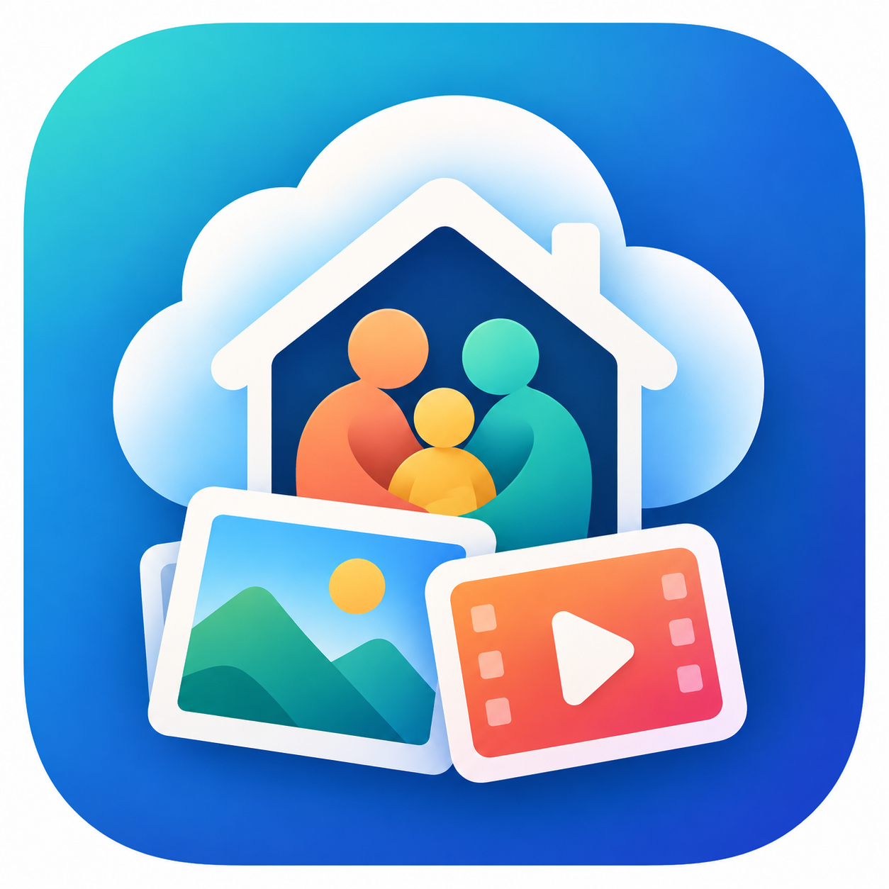

把故事说出来
用自己的话写下回忆，或录下一段讲述。照片和视频让故事有画面，声音和文字让故事有温度。
记录 · 署名 · 同意
拾光相册PhotoHouse纯本地部署 · 家庭故事
PhotoHouse 是可纯本地部署的家庭记忆中心。照片、视频、录音和文字，都是讲述故事的载体；原始资料保存在家庭自己的设备或服务器上，让回忆有来处，也有归处。
本地保存与处理 · 家人掌握资料 · 每段故事有出处
01 / 我们相信
一张照片让人想起那天，一段视频留下动作与笑声，一段录音保留家人的语气，几行文字补上当时的心情。PhotoHouse 把这些素材围绕人物、经历和故事组织起来，让家人各自讲述、彼此补充。原件与出处始终保留；长篇口述和自动合写是下一步的方向。
02 / 从一声“记得”开始
先留下来，再慢慢整理。每一步都看得见素材从哪里来，也由家人决定如何使用。
用自己的话写下回忆，或录下一段讲述。照片和视频让故事有画面，声音和文字让故事有温度。
记录 · 署名 · 同意原始贡献与转写、整理稿分开保存。需要更正时，可以回到原文和录音核对。
原件优先 · 来源可查把回忆和影像编进故事或章节，由家人检查、补充和决定如何分享。
共同整理 · 家人审阅读给家人听，也留给下一次相聚。一本家族故事，是许多真实讲述慢慢汇成的。
持续补充 · 带着出处一段故事如何汇合
故事可以从各自的原话开始。整理时，保留谁说了什么、彼此如何补充；章节是共同阅读的线索，不会抹去每个人的声音。
虚构示意 · 仅说明来源与讲述如何并列，不代表自动合写已开放“石榴熟了，外公总说要等全家都回来再摘。”
林姨 · 口述摘录 来源 01“我记得那年下过雨，果子裂开了，我们还是挑好的装进篮子。”
外公 · 口述摘录 来源 02“表姐把最大的那颗留给了刚放学的我。”
小岚 · 文字回忆 来源 03章节可以串起线索，原始讲述仍各自保留。
03 / 现在与以后
我们把已交付的能力和正在探索的方向分开说明。状态依据 2026 年 10 月 14 日项目记录；实际可用范围以各自安装与家庭验收为准。
手机与 Web 助手支持受保护的语音或文字检索、展示已保存故事的卡片、打开故事，并朗读一小段开篇。也可主动录制短段讲述；由家人开始，可暂停或结束。
文字和录音贡献保留原作者与版本；转写、润色和章节引用属于后续整理，可核对来源。家庭资料库按成员权限保护。
长时口述采集、自动叙事与章节串联、标题建议和记忆分组仍在规划与质量评估中。安装中的自动生成与自动拼接当前关闭；未来建议也需要家人核对和采纳。
记忆属于家人
PhotoHouse 支持家庭自己部署与保存原件，使用自己配置的本地模型服务处理声音和文字。家人可以在家中访问；配置远程访问后，手机连回家庭服务器。公开介绍网站不接入家庭资料库，照片、视频、录音和故事不会因网站公开而公开。
04 / 一起把它做好
PhotoHouse 以开源方式持续改进。欢迎了解架构、阅读开发指南，或从一项小而清楚的贡献开始。公开代码不包含家庭照片、录音、运行凭据或模型权重。